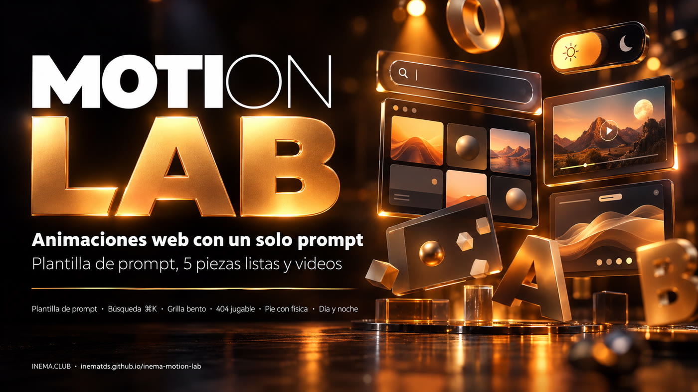

Una plantilla de prompt, cinco piezas interactivas en el estilo INEMA y un video corto de cada una. Copia, adapta y usa.

INEMA Motion Lab enseña a pedirle animaciones de sitio a una IA (Claude, Codex u otra) y recibir algo con acabado profesional, no un efecto genérico. Trae una plantilla de prompt en tres partes (apariencia, movimiento y reglas) y cinco ejemplos reales hechos con ella: una búsqueda ⌘K, una cuadrícula de recursos, una página 404 jugable, un pie de página con letras que caen y un botón de tema día/noche. Cada pieza es un único archivo HTML que abres en el navegador y pegas en tu sitio, y viene con el prompt que la generó y un video corto. Sirve para quien hace páginas, guías o cursos y quiere movimiento sin depender de una biblioteca pesada.
La plantilla es lo más valioso: es la que hace que la próxima animación salga bien. Las piezas y los videos son la prueba de que funciona.
Apariencia con valores exactos, movimiento en pasos numerados con tiempos en milisegundos y reglas técnicas que evitan los errores más comunes.
Un archivo HTML cada una, sin build, con los colores y las fuentes de INEMA. Funcionan en el celular, con el teclado y con movimiento reducido.
Cada pieza tiene un modo demostración con cursor fantasma, grabado en WebM y MP4, listo para usar como imagen de apoyo en videos y publicaciones.
Las cinco piezas pasaron por este mismo camino. La prueba y la grabación son scripts de este repositorio.
El video muestra la demostración automática. Haz clic en "Abrir en vivo" para usar la pieza aquí mismo.
La píldora de búsqueda crece y se convierte en una paleta de comandos. Al escribir se filtran cursos, guías y eventos, las flechas mueven un resaltado que se desliza y Enter abre el elemento.
cargando…
"Lo que hay en INEMA.CLUB" en bloques de distintos tamaños. Un marco ámbar se desliza hasta el bloque bajo el mouse y este despierta con una mini animación propia.
cargando…
"Esta página se escapó." Una capibara corre y salta bugs mientras la persona decide si vuelve a INEMA.CLUB. Empieza en piloto automático; el primer toque le pasa el control.
cargando…
Las letras I N E M A caen una a una y se apilan en el suelo del pie de página. Puedes agarrarlas y lanzarlas; "Ordenar letras" pone todo de vuelta en su lugar.
cargando…
El botón de tema es una escena: el sol baja, la luna sube, las ventanas de la escuela se encienden y la capibara se duerme. Los colores de toda la página cambian al mismo tiempo.
cargando…
Copia, cambia lo que está entre < > y pégalo en Claude, en Codex o en cualquier IA que escriba código.
Construye <QUÉ ES, en una frase: la pieza + lo que la persona hace con ella>. Apariencia: - Fondo, colores y tipografía con valores exactos (hex, fuente, peso, tamaño relativo). - Layout: dónde va cada bloque y cuánto del área ocupa (%). - Detalles que dan personalidad (contorno, sombra, textura, íconos). Movimiento: 1. <Qué pasa al entrar en pantalla> — duración en ms, orden, retraso entre elementos. 2. <Qué pasa cuando la persona interactúa> — pasar el mouse, hacer clic, arrastrar, teclear. 3. <La respuesta física> — resorte, rebote, inercia, el "peso" de las cosas. 4. <El estado final / de reposo>. 5. Modo demostración: hasta que alguien toque, un cursor fantasma demuestra la interacción por sí solo. Reglas: - JavaScript puro y CSS, sin biblioteca (o: "<biblioteca> solo para <función>"). - Un único loop requestAnimationFrame, pausado cuando la pieza sale de la pantalla (IntersectionObserver). - Animar solo transform y opacity; limitar devicePixelRatio a 2 en canvas. - Nunca capturar el scroll de la página; atajos de teclado solo con la pieza en foco o bajo el mouse. - Accesible: elementos reales (button, a, input) con foco visible; el teclado hace lo mismo que el mouse. - prefers-reduced-motion: mostrar el estado final, quieto (describe cuál es). - Un archivo HTML autocontenido.
| Parte | Sin ella | Con ella |
|---|---|---|
| Apariencia con valores exactos | colores y fuentes "por defecto de IA" | la pieza ya sale con la cara de la marca |
| Movimiento numerado con tiempos | animación vaga, demasiado rápida o lenta | ritmo intencional, fácil de ajustar ("paso 2 más lento") |
| Modo demostración | nadie descubre que se puede interactuar | la pieza se explica sola y se vuelve video sin esfuerzo |
| Pausar fuera de pantalla | página pesada, batería gastada | costo cero cuando nadie está mirando |
| No capturar el scroll | la página "se traba" cuando el mouse pasa por encima | la pieza convive con el resto del sitio |
| Movimiento reducido | quien se marea con el movimiento sufre | todos ven el contenido |
Probar y volver a grabar los videos requiere Node, Playwright y ffmpeg. Para solo usarlas, nada de eso es necesario.
Abre el index.html de la pieza en el navegador o copia el archivo a tu sitio.
# ningún comando
abrir pecas/dia-noite/index.htmlPara probar como en un sitio real (y para los scripts), sirve la carpeta por HTTP.
python3 -m http.server 8850 \
--directory . --bind 127.0.0.1Node 18+, el paquete playwright y ffmpeg en el sistema.
npm i playwright npx playwright install chromium
Los pasos 1 a 3 usan lo que ya está listo. Los pasos 4 y 5 sirven para crear una pieza nueva con la plantilla.
Todo es estático: piezas, prompts, videos y los dos scripts.
git clone https://github.com/inematds/inema-motion-lab cd inema-motion-lab
Cada pieza empieza en modo demostración. El primer toque, clic o tecla te pasa el control. Agrega ?demo=1 a la URL para que la demostración no se detenga.
python3 -m http.server 8850 --directory . --bind 127.0.0.1 # abre http://127.0.0.1:8850/pecas/busca-cmdk/ # o http://127.0.0.1:8850/pecas/busca-cmdk/?demo=1
Cada pieza ocupa toda la pantalla de su propio archivo. La forma más simple es incrustarla en un <iframe>; para integrarla de verdad, copia el HTML, el CSS y el JS de la pieza a tu página y cambia textos y enlaces.
<iframe src="pecas/bento-glide/index.html" title="Lo que hay en INEMA.CLUB" style="width:100%;aspect-ratio:16/9;border:0" loading="lazy"></iframe>
Completa la plantilla (molde/MOLDE-PROMPT-ANIMACAO.md), guárdala como pecas/<nombre>/PROMPT.md y pídele a la IA que escriba el index.html a partir de ella. Usa los cinco PROMPT.md como ejemplo del nivel de detalle. Para ajustar, pide por el número del paso: "en el paso 1, 80 ms en lugar de 120".
# ejemplo con Claude Code, en la carpeta del repositorio claude "Lee pecas/mi-pieza/PROMPT.md y escribe pecas/mi-pieza/index.html siguiendo el prompt."
La prueba revisa, en todas las piezas: ningún error de JavaScript, nada de scroll horizontal en 1280 y 360 px, la versión con movimiento reducido y si la pieza bloquea el scroll de la página. La grabación genera, para cada pieza, 8 s en WebM y MP4 más una imagen de portada en videos/.
python3 -m http.server 8850 --directory . --bind 127.0.0.1 & node tools/testar-pecas.cjs 8850 # 5/5 piezas OK node tools/gravar-videos.cjs 8850 # OK busca-cmdk: webm 285 KB, mp4 349 KB … node tools/gravar-videos.cjs 8850 dia-noite # solo una pieza
El laboratorio está listo para usar. Estas son las siguientes etapas posibles, todavía no realizadas.